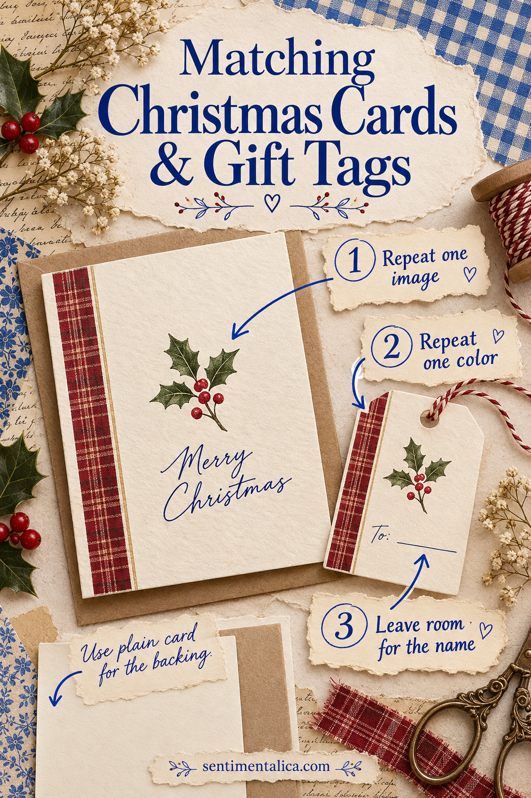

A matching gift tag makes a simple parcel feel considered. You can build one from the same paper used on your Christmas card, with no special punch or cutting machine. The useful trick is deciding what repeats and what stays plain. A shared colour and a small piece of matching imagery are usually enough.
Begin with the parcel and the card
Place your finished card beside the wrapped gift. Notice which part connects them naturally: a dark red detail, a cream border, a little checked paper, or one recognisable image. Choose a single feature to repeat. Matching every surface can make a small tag harder to read and uses more printed paper than the project needs.
Gather plain card, decorative offcuts, scissors, a ruler, a pencil, adhesive, and a pen. Add a hole punch and string if you want a hanging tag. If you have neither, plan a tag that tucks under ribbon or attaches to the parcel with a small piece of tape. The tag should work with the wrapping you already have.
Make one plain test before cutting the pretty paper
Cut a rectangle from scrap paper and hold it against the gift. A tag around 5 by 8 centimetres is a useful starting point, but a small jar or a large book may need something different. Write the recipient’s name on the test. There should be enough space to read it comfortably without fitting letters around the edges.

Use the test as a cutting guide for your actual tag. If you like clipped top corners, cut one corner first, turn the little triangle over, and use it to mark the opposite corner. A plain rectangle is equally finished-looking. Choose the shape that is comfortable for your hands and easy to repeat.
Carry one detail across from the card
Try a narrow decorative strip across the bottom, a small image near one corner, or a border behind a smaller plain rectangle. Keep any busy print away from the recipient’s name. A small piece of matching paper can look more deliberate when a generous area of plain card surrounds it.
Arrange everything dry before gluing. Compare the tag with the card from an arm’s length away: do they share an obvious visual thread? If they do, stop adding decoration. If the connection is weak, repeat a colour in the pen or string rather than covering the remaining writing space.
Let the back do a small useful job
Write the name first, then add a line that belongs to the gift. A book might carry “For your first quiet afternoon after Christmas.” A homemade treat could say “Made on Sunday, with the extra cinnamon you like.” Keep practical food information on a separate clear label when needed; the decorative tag should never be the only place someone can find important details.
For several parcels going to the same household, write both the recipient and giver. An affectionate nickname can go underneath, but a clear name helps when gifts are being passed around a crowded room. Add the year if the tag feels like something they might save.
Attach the tag so it survives the journey
If you punch a hole, leave enough card between the hole and the edge for it to hold. Tie the string gently rather than pulling it tight against the paper. For a fragile tag, glue a second plain layer behind the hole and let it dry before threading. You can also skip the hole and slide the tag under a ribbon crossing.
Lift the parcel once by its sides and check the tag’s position. Does the name face outward? Can the gift be carried without bending it? Put the matching card beside the parcel for a final look. Save the remaining offcuts in one envelope, so the next small gift can share the same thoughtful thread.